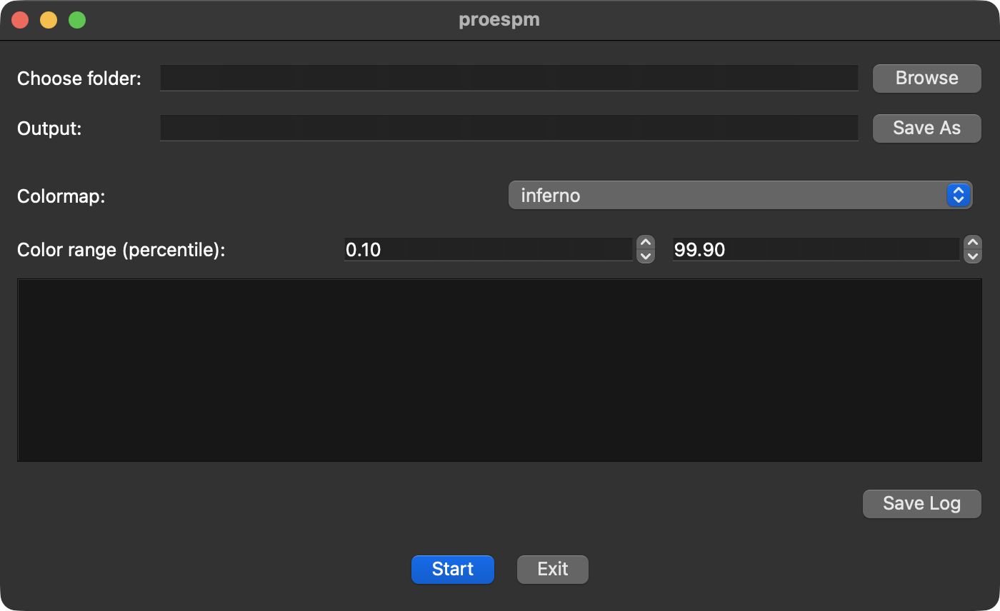

Usage
GUI
If you used uv for installation, you can navigate
to the project root (the folder that contains the pyproject.toml file) and run
proespm with:
You can then see the following graphical user interface that contains everything for report creation:

With the Browse button you can choose the folder that contains your data files from measurements. You can also enter the disired path in the input field next to it.
If you used the button, the output path gets populated automatically with the parent folder of the chosen folder. This is where the created report will be saved. You can edit this path also directly in the input field or choose another one with the Save As button.
Next, you can choose the colormap for Scanning Probe Microscopy (SPM) image data. All matplotlib colormaps are available.
Finally, you can choose the color range that is used to create SPM images. If you're not familiar with SPM, this basically allows to 'remove' outlier data points from the color range.
You can then process your data and create a report by clicking the Start button.
In the big area under the color range (log area), you will be presented with log information about which files are processed at the moment. Under that, the Save Log allows for saving this information to a file. This is especially useful if any errors occur during processing. If you report any errors, it is best to share a saved log file with the maintainers.
After the processing finished, you can open the created HTML report in a browser.
CLI
If you install the CLI via uv tool install you can simply run
where DATA-DIRECTORY contains your measurement files of which the HTML report
should be created. By default the report is created in the same directory where
DATA-DIRECTORY is located with the basename of DATA-DIRECTORY and
'_report.html' appended. This can be overwritten with the -o or --output
option. The color map and color range of microscopy data can be configured via
the -c/--colormap and -s/--colorrange-start and -e/--colorrange-end
options, respectively. For a list of all options and their default values, use
the -h/--help option.